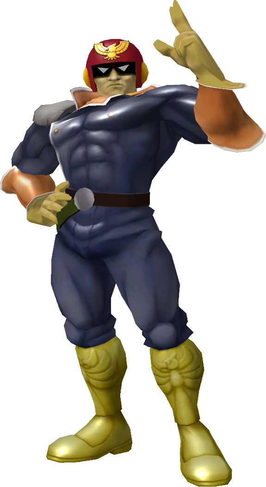

|  | Rank 8th of tier list : CAPTAIN FALCON |
| Weight | |
|---|---|
| 6-7th heaviest | |
| Shield stats | |
| Roll lenght | 14th longest |
| Shield size | 7th biggest |
| Grab range | 7th longest |
| Wavedash lenght | 19-20th longest |
| Movement stats | |
| Walking speed | 20th fastest |
| Turning speed | 12th fastest |
| Running speed | 1st fastest |
| Aerial stats | |
| Jump squat | 5 frames (8th fastest) |
| Short hop | 7-8th highest |
| Aerial speed | 4th fastest |
| First jump height | 3rd highest |
| Seconde jump height | 12th highest |
| Total jump height | 14-15th highest |
| Average fall speed | 3rd fastest |
| Fast falling speed | 2nd fastest |
| Falling speed | 3rd fastest |
| Ledge stats | |
| 0-99% ledge roll | 5th longest |
| 100%+ ledge roll | 3rd longest |
| 0-99% ledge attack range | 6th farthest |
| 100%+ ledge attack range | 7th farthest |
| Intangible ledgedash (Optimal/Perfect) | 10/17 frames |
| Notable players | |
| Wizzrobe, Gahtzu, S2J, Westballz, Isai, Lord | |
| Smashboard forum | |
| http://smashboards.com/forums/captain-falcon.66/ | |
| Post for Falcon | |
| http://smashboards.com/ | |
| Technique guide | |
| https://youtu.be/ | |
Captain Falcon currentyl ranks 8th place on the Melee tier list (in the B tier). He ranks rather high because he of his incredible comboing abilities ; he has fast falling speed and air speed, and the fastest dash of all characters, giving him one of the best SHFFLs in the game. His above average weight and fast falling speed makes him the most resistant character to vertical KOs. His speed, fast rolls, and Raptor Boost enable an excellent dodging and tech-chasing game.
Falcon also has multiple quick KO moves, most notably his Knee Smash, forward smash, and down aerial, all of which can be combo finishers. Against other high-tiered opponents, however, Falcon is susceptible to chaingrabs and combos due to his high falling speed. He is also prone to edgeguarding, since he has a predictable recovery that, like in Smash 64, cannot grab ledge hanging ennemies. Falcon lacks a projectile, impairing his approach in some matchups, while most of his attacks have long start-up and lack extend hitbox duration, making his aproaches very commmittal in general. As such Falcon is considered to have one of the most inconsistent neutral game among top-tiered characters. Regardless of his weaknesses, Captain Falcon still has impressive number of winning matchups, including six that are near-unloseable.